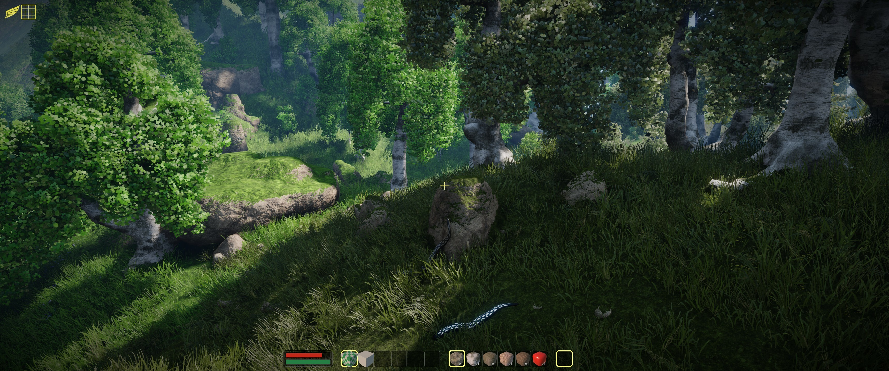
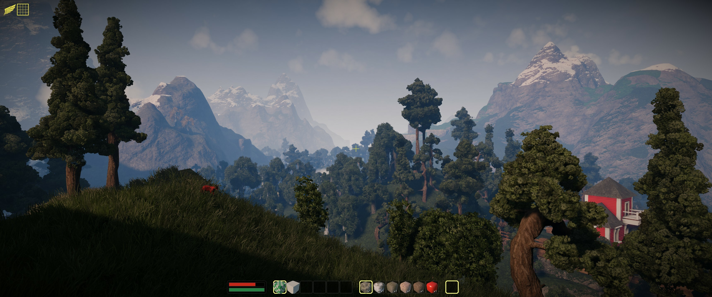
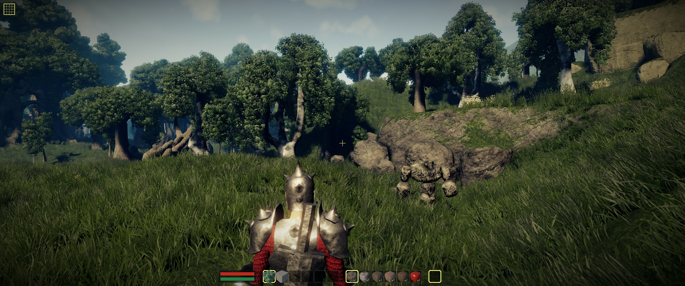

Everyone in the Blockscape.io community argues about which weapon type actually dominates the PVP Arena and high-level combat zones. You’ve got the melee bros swearing by raw axe damage, and the ranged players claiming muskets are the only way to play since server validation keeps things fair. But after sinking over a hundred hours into mining dragonstone, socketing mythic gems, and getting absolutely wrecked in the Dark Fortress, I’ve tested every single weapon category across all eight material tiers. I’m not just looking at base damage; I’m looking at DPS, survivability, and gem-socketing synergy. If you want to stop dying to goblins and start dominating the PVP leaderboard, you need to know the truth. Here is my definitive, no-nonsense ranking of every weapon type in Blockscape.io, from absolute trash to the undisputed meta.

Blockscape.io in action
At a Glance
Rank
Name
Key Stats
Verdict
#1
Swords — The Balanced Bore
Base 150 damage with a 1.2 attacks-per-second fire rate, yielding a st...
The ultimate jack-of-all-trades that ends up being a ma...
#2
Scimitars — The Bullet Hose
Deals 110 damage per hit but attacks at a blistering 1.8 attacks-per-s...
Incredible for grinding XP and farming, but completely ...
#3
Axes — The Skull Crusher
Swings at a sluggish 0.7 attacks-per-second but delivers a massive 280...
The ultimate high-risk, high-reward glass cannon that r...
#4
Crossbows — The Kiting King
Fires 350 damage bolts with a 0.6 reload speed, offering a solid 210 D...
The safest and most consistent way to clear content, bu...
#5
Muskets — The One-Shot Sniper
Delivers a devastating 500 damage per shot with the longest range in t...
The highest skill-ceiling weapon in the game that offer...
The Contenders
Swords — The Balanced Bore
Base 150 damage with a 1.2 attacks-per-second fire rate, yielding a steady 180 DPS. Upgrading through the 8 material tiers increases base damage by 40 per tier.
✓ Swords are the ultimate reliable workhorse for mid-game progression. Because they offer perfectly balanced damage and speed, you never get caught in a recovery animation when a skeleton ambushes you in the Graveyard. They synergize incredibly well with defensive amulets and full steel armor setups, allowing you to trade blows without getting burst down. In the PVP Arena, sword users can consistently apply pressure without overcommitting. Plus, socketing strength gems into a sword feels incredibly satisfying because the steady hit rate triggers your gem bonuses more frequently than slower, heavier weapons. It’s the safest, most consistent way to clear the Wolf Den.
✗ The problem with being perfectly balanced is that you excel at absolutely nothing. When you reach the Giant’s Plateau, the 150 base damage just doesn't cut it against high-health pools, and you’ll watch axes and muskets melt the same targets. Swords lack the burst damage required to quickly eliminate dark mages before they cast, meaning you take unnecessary chip damage. In PVP, a skilled scimitar user will simply out-DPS you in a straight fight, while a crossbow player will kite you to death. You are entirely dependent on out-healing or out-lasting your opponent, which gets boring fast and fails against high-burst builds.
The ultimate jack-of-all-trades that ends up being a master of none when the difficulty spikes.
Scimitars — The Bullet Hose
Deals 110 damage per hit but attacks at a blistering 1.8 attacks-per-second, generating a massive 198 sustained DPS.
✓ If you want to melt health bars through sheer volume of hits, scimitars are your best friend. The attack speed is phenomenal, making them the absolute best weapon for farming combat XP in the Spider Nest and Crab Shore. Because you're hitting so frequently, scimitars scale unbelievably well with gem socketing—especially if you socket gems that apply on-hit effects or boost mining speed for those hybrid playstyles. In PVP, the rapid attacks make it incredibly difficult for melee opponents to predict your strikes or interrupt your combo. You can also easily swap to your pickaxe for a quick mining run without losing your momentum, as the fast animations keep your character moving fluidly across the voxel world.
✗ Scimitars absolutely crumble against heavily armored targets. If you try to take down a player rocking full orichalcum armor and a defense amulet, your 110 damage hits will just tickle them. You also lack the range to safely engage from a distance, meaning you have to get right in the enemy's face, which is a death sentence against area-of-effect monster attacks in the Dragon's Lair. Furthermore, the low per-hit damage means you can't effectively stagger enemies, so you'll constantly get interrupted by giants and dark mages. It’s a high-risk, high-reward glass cannon approach that demands perfect positioning and constant healing.
Incredible for grinding XP and farming, but completely falls apart against high-defense endgame bosses and PVP tanks.

How they stack up
Axes — The Skull Crusher
Swings at a sluggish 0.7 attacks-per-second but delivers a massive 280 damage per hit, resulting in 196 DPS with extreme burst potential.
✓ Axes are all about raw, unadulterated burst damage. When you need to delete a target in two or three hits, nothing beats the heavy swing of an axe. This makes them the undisputed kings of the Dark Fortress, where dark mages and giants have massive health pools that require heavy per-hit damage to break through. In PVP, a fully socketed orichalcum axe is a one-shot machine; if you catch a squishy crossbow player out of position, they are instantly sent back to the spawn. They also double as a fantastic woodcutting tool if you're running a hybrid gatherer build, letting you chop petrified woodlands while still being ready to fight. The sheer intimidation factor of an axe swing keeps melee opponents at bay.
✗ The recovery animation on an axe swing is painfully long. If you miss a heavy swing against a fast-moving goblin or a kiting PVP player, you are completely locked out of dodging or blocking for a full second, which is an eternity in combat. They are also terrible for sustained farming; clearing out the Spider Nest with an axe takes forever because of the slow attack speed. In the PVP Arena, if you miss your initial burst, a scimitar or sword user will easily punish your slow recovery and chip you to death. You absolutely need high-tier armor to survive the downtime between your swings, making early-game axe play a miserable, dying experience.
The ultimate high-risk, high-reward glass cannon that rewards perfect timing but punishes every single missed swing.
Crossbows — The Kiting King
Fires 350 damage bolts with a 0.6 reload speed, offering a solid 210 DPS while maintaining a safe 15-tile engagement range.
✓ Crossbows completely change the geometry of combat in Blockscape.io. By keeping you 15 tiles away from the enemy, you completely negate the threat of melee weapons like swords and axes. This makes them incredibly safe for soloing the Wolf Den and Giant's Plateau, as you can just backpedal while dealing heavy damage. The burst damage is high enough to stagger most monsters, giving you time to reposition. In PVP, crossbows excel at zoning; you can control the arena space and force melee players to burn through their health just trying to close the gap. When paired with a luck cape for better loot drops and a defense amulet, you become an untouchable fortress that dictates the pace of every single fight.
✗ The reload animation is your biggest liability. If a fast enemy like a wolf or a scimitar-wielding PVP player closes the distance during your reload window, you are completely defenseless. You also consume a lot of resources to keep up your ammo, which can drain your gold reserves if you're not actively woodcutting and smithing to sustain your craft. Against other ranged players, crossbows lose the damage-per-second race to muskets, meaning you can't win a pure sniper duel. Finally, navigating the voxel terrain can be annoying; if you get backed into a corner in the PVP Arena, your range advantage vanishes, and you'll get shredded by a melee rushdown.
The safest and most consistent way to clear content, but completely helpless if an enemy manages to close the distance.
Muskets — The One-Shot Sniper
Delivers a devastating 500 damage per shot with the longest range in the game at 25 tiles, but suffers from a punishing 0.3 fire rate.
✓ Muskets are the undisputed heavyweights of Blockscape.io. With 500 damage per shot and a 25-tile range, you can literally delete monsters before they even know you're in the combat zone. This makes them the absolute best weapon for farming the Dragon's Lair and Giant's Plateau, as you can snipe dragons from across the map. In the PVP Arena, a fully socketed musket is a terrifying weapon; if you land a headshot or a clean body shot, you are taking off half of a player's health bar in a single click. The psychological pressure of playing against a musket user is immense, forcing opponents to play hyper-defensively and hide behind cover. When you hit, it feels incredibly rewarding, and the server-validated damage means no desync excuses.
✗ The fire rate is agonizingly slow. If you miss your shot, you are standing still for three whole seconds while the enemy rushes you down. This makes muskets incredibly vulnerable to aggressive PVP players who use cover to break your line of sight. They are also completely useless in tight, enclosed spaces like the Spider Nest, where you can't utilize the 25-tile range and end up getting swarmed. Furthermore, muskets require the highest level of game sense and map knowledge; you need to know exactly where enemies will be before you shoot. If you're a beginner who misses shots, you will die constantly, making the early game an absolute nightmare to get through.
The highest skill-ceiling weapon in the game that offers unmatched burst damage but will ruin your K/D ratio if you can't aim.
The Rankings
#1 SwordsRank 1 of 5
#2 ScimitarsRank 2 of 5
#3 AxesRank 3 of 5
#4 CrossbowsRank 4 of 5
#5 MusketsRank 5 of 5
Let’s get right into my definitive ranking of Blockscape.io weapons, from worst to best. At number five, we have the Scimitar. I know people love the attack speed, but it’s completely overrated for endgame. It just doesn't have the per-hit damage to break through high-tier armor, making it a liability in PVP and late-game zones. Number four is the Sword. It’s the ultimate beginner trap. It’s perfectly fine for the first few hours, but it completely falls off once you hit the Giant’s Plateau. It’s just too boring and lacks the burst to compete. At number three, the Crossbow. It’s incredibly safe and great for soloing, but the reload animations make it too clunky for high-level PVP. You’re just waiting to get rushed. Number two is the Axe. This is my hidden gem for aggressive players. The burst damage is phenomenal, and if you have the game sense to land your hits, you will melt bosses and PVP targets alike. But it takes the top spot? No. The Musket is the undisputed king. The 500 damage per shot and 25-tile range completely break the game's combat geometry. Yes, it’s hard to master, but once you do, you are untouchable.
Who Should Pick What
If you're a complete beginner
Go Crossbow
The 15-tile range keeps you safe from early-game melee monsters while you learn combat timing. It’s the most forgiving weapon to level up your combat skill without dying constantly.
If you love aggressive PVP
Pick the Musket
Nothing beats the psychological pressure and one-shot potential of a fully socketed musket. If you have good aim, you will dominate the PVP Arena and delete squishy targets instantly.
If you want to farm XP efficiently
Equip the Scimitar
The blistering 1.8 attacks-per-second fire rate melts through low-health mobs in the Spider Nest. It’s the fastest way to grind combat levels and gather loot drops.
If you play defensively and tank hits
Swing the Axe
Pair it with full steel armor and a defense amulet. You can afford to miss a swing and trade blows, relying on your massive health pool and 280 damage burst to win attrition fights.

The final verdict in action
The Bottom Line
At the end of the day, the Musket is the absolute best weapon in Blockscape.io, and it’s not even close. The 500 damage per shot and 25-tile range completely invalidate traditional melee combat. Yes, the slow fire rate means you have to actually aim and use cover, but that’s exactly why it’s the best—it rewards skill. If you want to mindlessly click, go play a Scimitar. But if you want to dominate the PVP Arena and one-shot dragons, socket your best mythic gems into an orichalcum Musket and start sniping. Once you land that first 500-damage headshot, you’ll never go back.